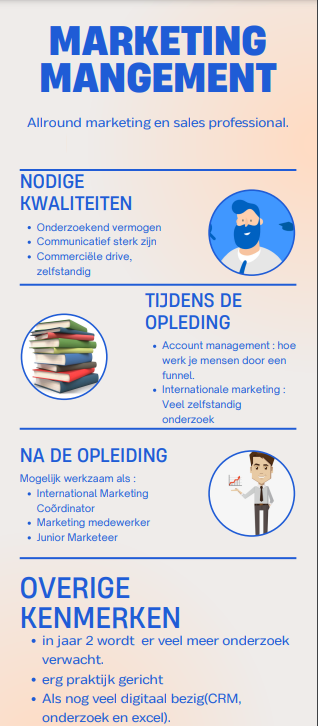

Intro.
Met al deze informatie op een rij is het tijd voor mij te beslissen welke kant ik op wil gaan. In de huidige situatie ligt mijn voorkeur bij het volgen van marketing management volgend jaar. Voor verschillende redenen ben ik op dit besluit gekomen.Wat kan ik.
1. Wat kan ik nu? Door vorige opdrachten die ook op deze website staan is mij een beetje duidelijk geworden welke vaardigheden ik nu bezit. Een paar die opmerkelijk zijn: nieuwsgierigheid, kritisch denken en aanpassingsvermogen. Dit zijn vaardigheden die ik uit mijn spinnenweb haal waar ik van denk best handig zijn voor volgend jaar. Zo zijn deze vaardigheden erg goed tijdens het onderzoek gedeelte van de opleiding. In dit zelfde spinnenweb staat wel dat initiatief nemen en leiderschap iets is waar ik minder in ben, dit zijn punten die ik beter zal moeten beheersen voor deze studie. Dit houdt mij er alleen niet van om deze opleiding te doen maar in tegenstelling zie ik dit als een goede kans om mezelf te verbeteren op deze punten.
De conclusie, wat IK wil.
2. Wat wil ik? Zoals in het vision board duidelijk werd zijn er een paar dingen die ik wil voor de toekomst. Ik vind vrijheid zowel in mijn werk als erbuiten erg belangrijk. De informatie die ik nu heb van mijn mogelijkheden tijdens en na mijn opleiding geeft aan dat ik een bepaald aantal vrijheid kan verwachtten. Al is dit een heel moeilijk iets om zo te kwantificeren, kan ik wel zeggen dat de vrijheid die je krijgt in het vak iets is waar ik naar zoek. Er zijn veel mogelijkheden tijdens en na mijn opleiding en met een redelijk salaris komt er ook een grotere financiële vrijheid kijken. Conclusie, ik weet eigenlijk nog niet zeker in welke branche ik wil gaan werken of hoe nou een dag er over 10 jaar uitziet, maar dat hoeft ook niet. Een erg aantrekkelijk punt aan deze afstudeerrichting is dat je er veel kanten mee op kan gaan. Je traint voor een positie die in vrijwel elk bedrijf gezocht wordt en er dus veel deuren voor je openstaan. Daarom kies ik ervoor om volgend jaar marketing management te gaan doen en hopen dat dit het begin wordt van mijn carrière, waar dat ook mag zijn.